Zennの「frontend」のフィード
フィード
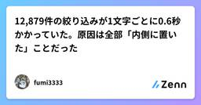
12,879件の絞り込みが1文字ごとに0.6秒かかっていた。原因は全部「内側に置いた」ことだった
Zennの「frontend」のフィード
リゾートバイトの求人を派遣会社6社から集めて、時給・寮・食事・勤務期間を同じ基準に揃えて比較できるサイトを1人で作っています。掲載は12,879件、公開ページは170枚です。https://fumiproject.dev/resort/求人データは1ファイルにまとめてブラウザへ渡し、絞り込みも並べ替えも全部クライアント側でやっています。サーバーを持たない作りなので、検索の速さはそのままJavaScriptの速さです。そのフリーワード検索が、スマホで文字を打つたびに固まっていました。この記事は、その原因を測って直した記録です。先に結論です。1回の絞り込みに 663ms かかって...
14時間前
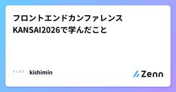
フロントエンドカンファレンスKANSAI2026で学んだこと
Zennの「frontend」のフィード
はじめにフロントエンドカンファレンスKANSAI2026に参加しました。学びを忘れないように、印象に残った内容を記録します。 HTMLを着たCanvas 2D — HTML-in-Canvasで作る未来のWeb UI表現HTMLの豊かな文字表現と、Canvasの自由なグラフィック表現を組み合わせることで、これまでと違ったWeb UIを作れるという話でした。文字がぐにゃぐにゃと曲がったり、傾いたりする表現が印象に残りました。現代アートのような見た目なのに、ボタンなどのUIは操作できるところが面白かったです。実際に動くデモが豊富で、技術的な制約についても説明されていました...
16時間前
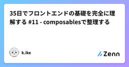
35日でフロントエンドの基礎を完全に理解する #11 - composablesで整理する
Zennの「frontend」のフィード
この記事で学ぶこと#9 で見た目を部品（コンポーネント）に分け、#10 でフォーム入力を受け取れるようになりました。ここまでで小さなアプリは作れます。ところが機能を足していくと、今度は <script setup> の中身がどんどん長くなります。今回は、状態とロジックを関数として切り出して再利用する composable（コンポーザブル） を学びます。あわせて、その土台になるコンポーネントの一生（ライフサイクル）も扱います。composable が何者で、普通の関数と何が違うかを説明できる同じ composable を2箇所で使ったとき、状態がどうなるかを説明でき...
1日前
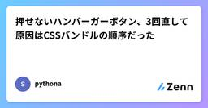
押せないハンバーガーボタン、3回直して原因はCSSバンドルの順序だった
Zennの「frontend」のフィード
はじめに社内の業務システム(React + Vite)のQAから、こんな報告が来ました。日付の左の三本線がクリックできない添付はスクリーンショット1枚だけ。機種も画面幅も、押したときに何が起きたのかも書かれていません。この一行から始まったバグ修正で、私は3回も見当違いの場所を直し、最後にたどり着いた原因はCSSバンドル内の規則の順序でした。今回はその迷走の過程をそのまま書きます。 前提: ハンバーガーボタンは2つあるこのアプリのサイドバーは、画面幅で挙動が変わります。PC幅(>900px): サイドバーは常時表示。サイドバー上部の「≡」を押すと60pxのア...
1日前
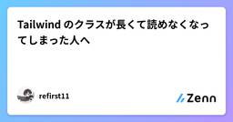
Tailwind のクラスが長くて読めなくなってしまった人へ
Zennの「frontend」のフィード
はじめに前提として他のライブラリに行くことをお勧めしません。それは最終手段であり、対処作戦ではないからです。なんのライブラリに行けばいいかと悩んだ場合、その時はTailwindのことをもう考える必要は既にないでしょう。 それでは参ります。 1. クラス名を変数に切るconst textPrimary = 'text-2xl text-slate-900'見たくないということなので4クラスを超える前くらいに変数に落としてリファクタします。 2. cnを使うtwMergeより30倍速い関数で、定番shadcn/uiのshadcn/cnのリポジトリです。<...
1日前

AIエージェントの引き継ぎは「会話を移せた」で終わらせない
Zennの「frontend」のフィード
別のコーディングエージェントで会話が開けても、直前の作業をそのまま続けられるとは限らない。Reactの画面修正を途中でClaude CodeからCodexへ渡すとしよう。変更したファイル、落ちていたテスト、許可した操作まで同じ場所にそろっているか。履歴を読めることと、次の編集に責任を持てることは違う。Octoberは複数のエージェントと人間の作業を見渡し、handoffやreviewを扱う作業画面を掲げる。一方、Moiraiは対応するエージェント間でセッションを変換して新しいセッションに引き継ぐための道具だ。監督する画面と、持ち運べる文脈は別の層にある。どちらも「作業環境の丸ごと複製」...
1日前
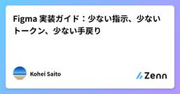
Figma 実装ガイド：少ない指示、少ないトークン、少ない手戻り
Zennの「frontend」のフィード
本記事では、一般的な Web サイト（LP などの小規模サイトから大規模サイトまで）の Figma デザインデータを、AI 駆動開発でエージェントが実装するための考え方と、具体的な手順をまとめます。人間が要件や成果物を判断・承認し、AI エージェントが実装を担当する Human-in-the-Loop の運用を前提とします。Figma MCP は無料でも試せるようですが、本記事では Figma の Dev モードを使います。実行環境には、Figma 公式プラグインを導入したエージェント実行基盤（GitHub Copilot を利用する VS Code、Cursor、Claude De...
2日前
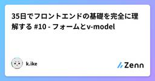
35日でフロントエンドの基礎を完全に理解する #10 - フォームとv-model
Zennの「frontend」のフィード
この記事で学ぶこと#7 で状態（ref）、#9 でコンポーネントの組み立てを学びました。今回は、ユーザーの入力を受け取る フォーム を扱います。主役は v-model。入力欄と状態を結びつけて、「入力したら状態が変わる、状態を変えたら入力欄も変わる」を1行で実現する、Vue のいちばん便利な機能の1つです。迷ったら🔴だけ確実に（🔴 覚える、🟡 理屈、⚪ 流す）。!コードは #6 で作った Vite + Vue プロジェクトで動かせます。入力欄と状態の結びつきは、実際に Vue で描画して確認しています。 🔴 v-model：入力欄と状態を双方向に結びつけるフォームの...
2日前
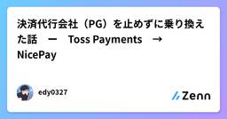
決済代行会社（PG）を止めずに乗り換えた話 ー Toss Payments → NicePay
Zennの「frontend」のフィード
はじめに当時勤めていた会社のECサービスで、運用中の決済代行会社（PG）をToss PaymentsからNicePayへ乗り換えました。条件は「決済を一度も止めない」「約５０店舗を、店舗ごとに順番に切り替える」「いつでも戻せる」。フロントエンドは私1人でした。その時に決めた設計3つと、つまずいたところを書きます。（Toss Payments・Nicepayはどちらも韓国のPGで、日本のGMOペイメントゲートウェイのような立ち位置です。） 「決済ができない」と言われた日2024年3月のある日、「決済ができない」という問い合わせが届きました。調べるとPG側で私たちの決済サービス...
2日前
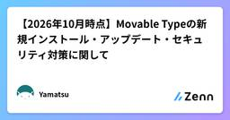
【2026年10月時点】Movable Typeの新規インストール・アップデート・セキュリティ対策に関して
Zennの「frontend」のフィード
概要本記事は、過去に投稿したMovable Type（以下MT）の新規インストール・アップデート・セキュリティ対策に関する記事（各記事へのリンク）を暫定的にまとめたものになります。リンク先の記事内容が一部古いものもありますが、古い情報については本記事の各項目で補足しています。また、リンク先の記事も順次更新する予定です。 直近のセキュリティアップデートについて直近では、mt-upgrade.cgiで任意のコードやSQLが実行される脆弱性およびmt-search.cgiで不正なSQLが実行される脆弱性が見つかり、その修正対応版がリリースされています。すぐのアップデートが難しい...
2日前
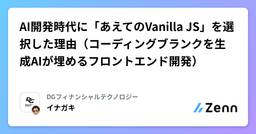
AI開発時代に「あえてのVanilla JS」を選択した理由（コーディングブランクを生成AIが埋めるフロントエンド開発）
Zennの「frontend」のフィード
はじめにこんにちは。DGフィナンシャルテクノロジー（DGFT）技術本部のイナガキです。前回（第1回）の記事では、長らくコーディングの第一線から離れていた私が、生成AIとAWSを活用して実質100時間で社内の「作業実績報告システム」を立ち上げた全貌をご紹介しました。第2回となる今回は、システムの「顔」となるフロントエンド（UI）開発についてのお話です。プログラマーとしての現役を退いていた私のキャリアのベースは、かつてのサーバーサイド主体のWebシステム開発でした。そのため、フロントエンドに対しては「調整に時間がかかる」という苦手意識が根強くありました。かつてのHTML/CSS（...
2日前
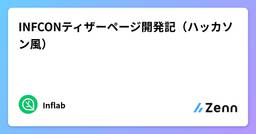
INFCONティザーページ開発記（ハッカソン風）
Zennの「frontend」のフィード
!この記事は2022年6月7日に執筆されたものです。InflearnのカンファレンスであるINFCON 2022が、8月26日にCOEXグランドボールルームで開催されます！ 🎊 ティザーページを見に行く →こんにちは。フロントエンド開発チームのRIONとRokです。 🙂 今年の8月、Inflab初のカンファレンスを開催することになりました。今回は、登壇者の募集と開催告知のためのティザーページを開発した経験を共有します。 技術スタックプロモーションが主な目的のサイトなので、SEOに有利な技術スタックが必要でした。一般的に、Reactで作られたSPAはCSRでレンダリングさ...
3日前
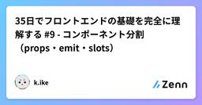
35日でフロントエンドの基礎を完全に理解する #9 - コンポーネント分割（props・emit・slots）
Zennの「frontend」のフィード
この記事で学ぶこと#6 で Vue を始め、#7 でリアクティビティ、#8 でテンプレートの書き方を学びました。ここまでは1つのコンポーネントの中の話です。今回は、画面を 小さな部品（コンポーネント）に分けて、部品どうしをつなぐ 方法を学びます。登場するのは props・emit・slots の3つ。Vue でアプリを組むときの、いちばん基本の組み立て方です。迷ったら🔴だけ確実に（🔴 覚える、🟡 理屈、⚪ 流す）。!今回のコードは #6 で作った Vite + Vue プロジェクトの中で動かせます。説明に出てくる props の受け渡しは、実際に Vue で描画して確認した結...
3日前

Power Platform 管理センターの新しい環境ビューで検索が軽くなったので、従来ビューからの改善点を技術的に調べてみた
Zennの「frontend」のフィード
最近、Power Platform 管理センター の環境一覧に、「新しい環境ビュー」というスイッチができました。オンにすると、これまでより反応が速く、使いやすくなっていました！実は、これまで、この環境一覧画面は日本語表示だと動作が重いと感じていました。暫定的な対処として、ブラウザーの表示言語を英語にすると、なぜか速くなることは知っていました。ただ、なぜ英語だと速いのか、新しい環境ビューではどうして速くできたのかが気になり、技術的な観点から調べてみました。この記事では、その過程と結果を書きます。!検証は 2026 年 10 月 10 日に行いました。画面や実装についての記述は、こ...
3日前
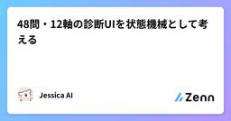
48問・12軸の診断UIを状態機械として考える
Zennの「frontend」のフィード
この記事は公開UIのブラックボックス観察に基づく設計メモです。対象サイトのソースコード、非公開アーキテクチャ、計測値、運用状態を知っているという主張ではありません。以下の型と図は、同種の診断UIを議論するための設計案です。 観察できるプロダクト契約Test Ideologia Politica の公開ページから、48問、5段階回答、12軸の結果、戻って回答を確認できること、アカウント不要、端末内計算という説明を確認できる。重要なのは、これらが単なるコピーではなく、テスト可能な契約になる点だ。「回答はサーバーに送信しない」と掲示するなら、ネットワーク観察とオフライン実行で回帰確認し...
3日前
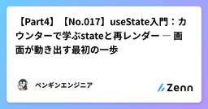
【Part4】【No.017】useState入門：カウンターで学ぶstateと再レンダー ― 画面が動き出す最初の一歩
Zennの「frontend」のフィード
みなさん、こんにちは！ペンギンエンジニアです！前回016の次回予告で、「次回からPart 4、useStateで画面が動き出します。クリックで数字が増えるカウンターを作りながら、stateと再レンダーの仕組みを扱います」とお伝えしました。今日はその約束を回収する回です。016のまとめでは、「この画面は一度描いたら、それきりです。クリックしても、時間が経っても、何も変わりません」とも書きました。今日、画面が動き出します。先に種明かしをすると、普通の変数を書き換えても画面は変わりません。画面を変える入り口が、stateです。筆者はSES育成の場面で、「クリックしても画面が変わ...
4日前
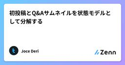
初投稿とQ&Aサムネイルを状態モデルとして分解する
Zennの「frontend」のフィード
この記事の範囲公開ページで確認できる入力項目と説明から、初投稿用とQ&A用のサムネイルフローを設計メモとして分解する。内部API、モデル、生成品質、処理時間は確認していない。以下の型と図は実装の事実ではなく、レビュー可能な仮説である。 初投稿は「白紙を避ける」状態初投稿では、画像の加工より先に、動画の中心を選べることが重要になる。My First Video Thumbnail の公開フローは、初投稿向けの見た目を選び、短いアイデアや参考画像を加え、1280×720のカバーを生成する流れとして読める。type FirstUploadState = | { val...
4日前

CSSの上書きを5ケースで検証する：@layer・important・:where()
Zennの「frontend」のフィード
セレクターを長くしたのに、CSSが上書きできない。@layerを導入したあとなら、詳細度より先にレイヤーの順序やレイヤー外の宣言を確認する必要があります。この記事では、色だけが競合する5ケースを作り、最終的なcolorを測定します。既存CSSをレイヤーへ移すときの確認手順も整理します。 再現デモと測定条件23ケースの再現デモのソースを保存してブラウザーで開くと、各ケースと実測表を確認できます。この記事で使うケース名は表に記載しています。2026年9月29日、Chromium（ユーザーエージェント上のバージョンはChrome 154）で確認しました。数値はCSS pxです。Saf...
5日前

フロントエンドカンファレンス関西2026に参加しました
Zennの「frontend」のフィード
概要表題の通り、フロントエンドカンファレンス関西2026に参加しました。普段はバックエンドの領域を担当していることが多いですが、領域を超えて学べることが多く、大変有意義なイベントでした。https://2026.frontend-conf.osaka.jp/以下、拝聴したセッションの感想になります。 今さら理解するウェブフォント2026https://speakerdeck.com/takanorip/imasara-rikai-suru-ver-2026扱いが難しくて妥協することが多かったので、Webフォントの話を聞きにきました。どうしても重くなってしまうフォ...
5日前
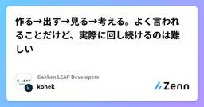
作る→出す→見る→考える。よく言われることだけど、実際に回し続けるのは難しい
Zennの「frontend」のフィード
はじめにこんにちは、Gakken LEAPでフロントエンドエンジニアをしているkatashimaです。以前の記事では、https://zenn.dev/gakken_leap/articles/3e329c7d6e0fcbhttps://zenn.dev/gakken_leap/articles/2a4660a39b0a99エピックオーナーとして機能開発の上流から関わるようになり、「どう作るか」だけではなく「誰のために、なぜ作るのか」を考えるようになったことを書きました。その後はSEO対策周りやClarityにも触れ、作ったものを出して終わりにせず、実際にユーザーがどう動...
5日前